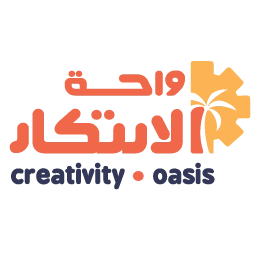

01↗
زيارات مدرسية مخصصة
نصمم تجربة الزيارة بما يناسب المرحلة الدراسية وعدد الطلاب والهدف التعليمي للمدرسة.

احجز زيارةمجتمع واحة الابتكار
نساعد المدارس على تحويل تعليم STEAM من نشاط مؤقت إلى ثقافة قائمة ومستدامة، من خلال مسار مصمم لاحتياج كل مدرسة ويبدأ بزيارة ملهمة للطلاب إلى الواحة.
مهمتنا أن يصبح تعليم STEAM ممارسة راسخة داخل المدرسة. لذلك نربط تجربة الطلاب بتطوير المعلمين وتجهيز البيئة، ضمن مسار تتراكم فيه الخبرة بدل أن تبدأ من جديد مع كل نشاط.
الزيارة المدرسية هي أول خطوة للتعرّف على إمكانات الواحة وطريقتنا في العمل. يخوض الطلاب تجربة تطبيقية مصممة لمرحلتهم، وتكتشف المدرسة منها فرص التعاون المناسبة لها.
نبدأ بفهم طلابكم وأهدافكم وإمكاناتكم، ثم نصمم مزيج الخدمات الأنسب؛ في الواحة أو داخل المدرسة، كخطوة منفردة أو مسار متكامل.
نصمم تجربة الزيارة بما يناسب المرحلة الدراسية وعدد الطلاب والهدف التعليمي للمدرسة.
نبني برامج تُنفّذ في الواحة أو داخل المدرسة، انطلاقًا من احتياجها ورؤيتها وإمكاناتها.
نُمكّن المعلمين من دمج مشاريع STEAM في المناهج والممارسات الصفية بطريقة تطبيقية قابلة للاستمرار.
نصمم ونجهّز بيئات عملية تساعد الطلاب والمعلمين على تحويل الأفكار إلى تجارب ومشاريع.
ما نعرضه هنا هو بداية الإمكانات. نربط التخصص الهندسي بالرؤية الأكاديمية والخبرات العالمية لنصنع مسارات تناسب كل مدرسة.
خبرات هندسية تحوّل الأفكار التعليمية إلى تجارب ومشاريع قابلة للتطبيق.
برامج تُبنى وتُراجع بما يحقق قيمة تعليمية واضحة للطلاب والمدارس.
خبرات وتجارب تعليمية من إيطاليا وهولندا ودول أخرى تفتح آفاقًا جديدة.
فرص تتجاوز حدود الصف وتعرّف الطلاب على بيئات وتجارب عالمية.
مسارات ممتدة تمنح الطلاب مساحة أكبر للاستكشاف وتطوير مشاريعهم.
لكل مدرسة احتياج مختلف، ولهذا نصمم مسار التعاون بما يناسب طلابها ورؤيتها وإمكاناتها.
الزيارة ليست غاية مستقلة، بل بوابة لمسار مرن يجعل الخبرة تتراكم داخل المدرسة وصولًا إلى ثقافة STEAM مستدامة.
تجارب تثير الفضول، وتنمّي التفكير الناقد، وتحوّل المعرفة إلى نماذج وحلول يصنعونها بأنفسهم.
منهجيات وأفكار عملية تساعدهم على تصميم تجارب STEAM وربطها بالتعلّم داخل الصف وخارجه.
مسار واضح يبدأ بالتجربة، وينمو إلى بيئة ابتكار وهوية تعليمية يتشاركها الطلاب والمعلمون والإدارة.
احجز زيارة لطلابك، واكتشف كيف يمكن أن تصبح واحة الابتكار شريكًا في بناء ثقافة STEAM مستدامة داخل مدرستكم.
احجز زيارة لطلابك يفتح نموذج الحجز في نافذة جديدة